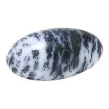

Mineral Grimoire
 Merlinite
Merlinite
Appearance
Tendril-like, two-colour opaque or translucent stone, may have opalescent sheen.
Origin
New Mexico.
Attributes
Merlinite brings magic and luck into your life. This dendritic stone holds the wisdom of shamans, alchemists and magician-priests, accessing multi-dimensions, and is a useful companion during between-the-worlds journeying. Merlinite supports shamanic practices or magical ritual, offering glimpses of the past or future where this is appropriate and bringing about a successful conclusion to spiritual endeavours. A combination of Quartz and Psilomelane, which may be opalized and show flashes of incandescent fire, this stone is attuned to the elements of earth, air, fire and water. It is perfect for the centre of the crystal medicine wheel to symbolize unity of the elements and the worlds.
Spiritually, a stone of equilibrium, Merlinite's dual colouring brings harmony, balancing complementaries such as yin and yang, conscious and unconscious, intellect and intuition, and masculine and feminine energies. It is the perfect stone for bringing together the divine feminine and masculine – goddess and god – blending spiritual and earthly vibrations and grounding them into the body or environment.
Psychologically a powerful energy cleanser, Merlinite reprogrammes ingrained patterns of behaviour in the mental and emotional etheric blueprints, bringing about profound change. It assists in coming to terms with negative experiences, turning them into positive learning.
Highly effective for karmic healing, Merlinite reaches into the past to read the Akashic Record and assists in reframing beliefs and vows that are creating blockages today.
Physically, Merlinite promotes the circulation of energy and oxygen around the body. An energy-saving stone that slows processes down or stimulates as appropriate, its dendritic tendrils resonate with nerve fibres, increasing energy flow along the spine and through the brain, and it can be of assistance in harmonizing the nervous system to an influx of higher vibrations.
Healing
Supports the respiratory, nervous and circulatory systems, intestines and heart.
Psilomelane's Journey to You
Psilomelane is a combination of manganese, quartz, and barium minerals with a monoclinic crystal structure, registering 5 to 6 on the Mohs scale. Its name derives from the Greek "psilos" meaning smooth and "melas" meaning black. Originally classified as an individual mineral species, it was reclassified in 1982 as a combination of different minerals. Despite this, the blend retains its original name and possesses profound metaphysical properties of its own.
Magickal Properties
Psilomelane is a stone of deep healing that assists energy workers in unearthing hidden emotions and motivations in their clients. It activates the Root Chakra to bring grounding and emotional support during challenging situations. It also clears and opens the Third Eye Chakra, sharpening clarity during divination and mediumship work while providing inspired wisdom to help interpret visions and messages.
For beginners, psilomelane reveals the messages behind coincidences in your life and uncovers the underlying karmic forces at play so you can turn them to your advantage. Its magnetizing quality makes it ideal for scrying, gazing, and trance work. It also helps you understand your patterns of emotional thinking while facilitating mental travel and deep meditation.
For advanced practitioners, psilomelane surfaces hidden emotional issues that may be obstructing physical healing and well-being. It offers support as you explore the aspects of yourself you may consider darker or less desirable, helping you see them in a new light filled with love and gratitude. During uncomfortable conversations or situations, it soothes reactive behaviors and softens your emotions so you can move forward with compassion. Wearing it against the skin supports well-being and helps sever the cords of buried negative energies. Its lithium content keeps healers relaxed as they engage in the work of transformation, transmutation, and energetic clearing.
Chakra Work
Psilomelane activates both the Root and Third Eye Chakras. Through the Root Chakra, it provides deep grounding and emotional stability during difficult times. Through the Third Eye Chakra, it enhances clarity for divination and mediumship, bringing inspired wisdom to help you interpret the visions and messages you receive.
Partners Well With
Pair psilomelane with Amethyst for enhanced spiritual protection and intuitive clarity. Fuchsite deepens heart-centered healing and emotional recovery. Green Tourmaline strengthens compassion and growth. Labradorite amplifies psychic awareness and transformation. Mookaite Jasper grounds adventurous energy and supports decision-making. Moss Agate nurtures emotional balance and connection to nature. Muscovite enhances spiritual insight and self-reflection. Rhyolite supports change and emotional resilience. Seraphinite elevates angelic connection and deep healing.
Lore
Psilomelane contains small amounts of lithium, which adds to its emotional support and healing properties. Its smooth, dark layers and swirling patterns have made it a sought-after stone for scrying and trance work throughout history.
Magickal Message
Know that you are divinely held and supported as you take on the deep inner work necessary for your evolution as a whole and fulfilled being.
Position
Place, grid or wear as appropriate.